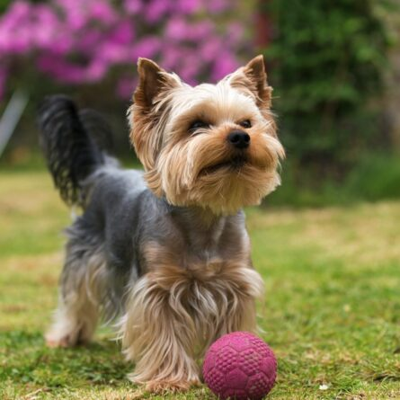

Yorkshires são ativos, repletos de vida, afetuosos e corajosos. Adaptam-se bem à vida em apartamento, mas seu temperamento esportivo requer exercícios.
Voltar à página inicial.
Yorkshires requerem cuidados diários para manter a saúde e integridade de pele e pelagem, que com o avançar
da idade podem se tornar frágeis e opacas. Além disso, o fornecimento de dieta com nutrientes específicos
auxilia no retardo do surgimento de cálculo dental e contribui para a qualidade de vida ao longo do tempo.